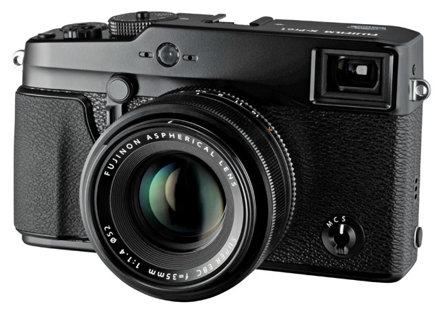

1.사진이나 영상물을 찍기 위한 기계(전자제품). '사진기'라고 부르기도 한다. 영상물을 찍는 기계는 주로 '캠코더'라고 부른다.
카메라의 어원은 스케치용 도구인 "카메라 옵스큐라"(라틴어로 '어두운 방'이라는 뜻)라는 것이 일반적이다. 초기 카메라인 다게레오타입을 시작으로 현대 디지털 카메라까지 모두 카메라 옵스큐라처럼 어두운 공간에 작은 구멍을 뚫어 굴절하는 빛을 맺히게 하는 방법을 사용한다. 이는 생물의 안구와 원리가 같고 단지 안구는 망막과 시신경을 사용해서, 카메라 옵스큐라는 사람이 직접 그려서, 필름 카메라는 필름에 반응시켜서, 디지털 카메라는 이미징 센서에 노출시킨다는 차이가 있을 뿐이다.
인간의 안구는 약 1억 2천만 화소인데 500억 화소 카메라가 나와 인간의 안구를 뛰어넘었다. 근데 500억 화소 카메라 크기가 사람만 하단 게 함정 사람눈보다 500배 좋은데 당연히 사람만 하겠지
덕후세계에서는 오디오 덕질, 시계 덕질과 함께 돈 잡아먹는 3대 덕질 중 하나로 카메라 덕질을 꼽는다.[1]
창작물에서는 사진에 나온 인원수와 실제 인원수를 헤아려보고서 '그럼 카메라를 든 사람은 누구지?'라면서 의문을 주는 것이 클리셰로 많이 사용된다.
ex) "우리들은 4명인데. 영상에 찍힌 사람도 4명이야! 그럼 카메라는 누가 들었지?" "셀카봉"이요. 삼각대와 타이머도 있다. 지나가던 사람도 있다.
여담이지만 세계 카메라 시장은 일본이 지배하고 있다. 3대 메이저 카메라 회사인 캐논, 소니, 니콘 모두 일본 회사다. 그리고 나머지 파나소닉, 올림푸스, 펜탁스마저 일본 회사다. 삼성전자도 카메라를 예전부터 개발해 왔지만 모종의 이유로 시장에서 철수했다. 삼성 카메라 지못미(...). 그 외엔 사치품 카메라로 유명한 라이카를 독일에서 생산한다. 그런데 '위기' 부분을 보면 알 수 있듯이 삼성과 애플이 결국엔 다 씹어삼키고 있다. 물론 진정한 승자는 이미지 센서 시장을 점령하고 있는 소니일 수 있다.
2. 우리나라에는 1883년에 최초 도입되었다.[2] 황철이란 사람이 들여왔는데, 카메라를 이용하면 후대에 기록이나 자료를 남기는 데 편리하겠다고 생각했다고. 그래서 자신의 집에 사진관을 세우고, 날마다 카메라를 들고 도성을 돌아다니며 저잣거리 풍경이나 궁궐을 찍었다. 하지만 당시 관료들도 서양문물에 그리 무식한 사람들이 아니었고, 국가보안상 대략 좋지 않다고 판단하여 황철을 의금부에 잡아 가두기도 하였다. 이런 보안상의 문제도 있지만, 초기 사진관들은 애들 살과 뼈를 녹여 사진의 재료로 삼는다는 유언비어에 시달리곤 했다.[3] 그러다 사진이 대중화 된 것은 단발령이 떨어진 뒤부터였는데, 머리를 자르기 전 상투를 틀고 있는 모습을 또렷히 남기고 싶었던 사람들이 많아지면서 사진관도 호황을 누리게 되었다고... 본격적인 상업용 사진관의 시초는 1907년 개업한 '천연당 사진관'이다. 사진의 역사에서 최초로 사진이 등장하고 인물 사진이 보편화 되기까지는 상당히 긴 시간이 걸린다. 상술한 촬영 방법도 문제긴 하지만 서구의 대중들도 처음으로 접하는 이 신기한 장치에 대해서 영혼을 빼앗아 간다고 생각 할 수밖에 없었다.